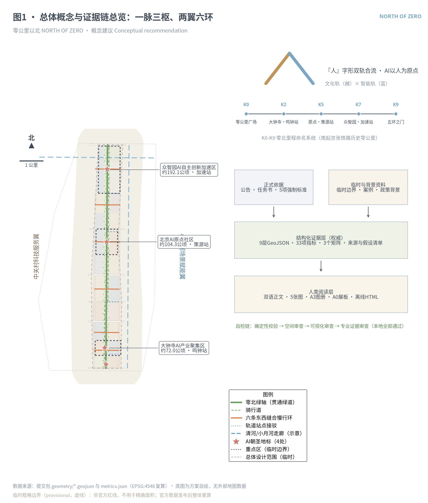
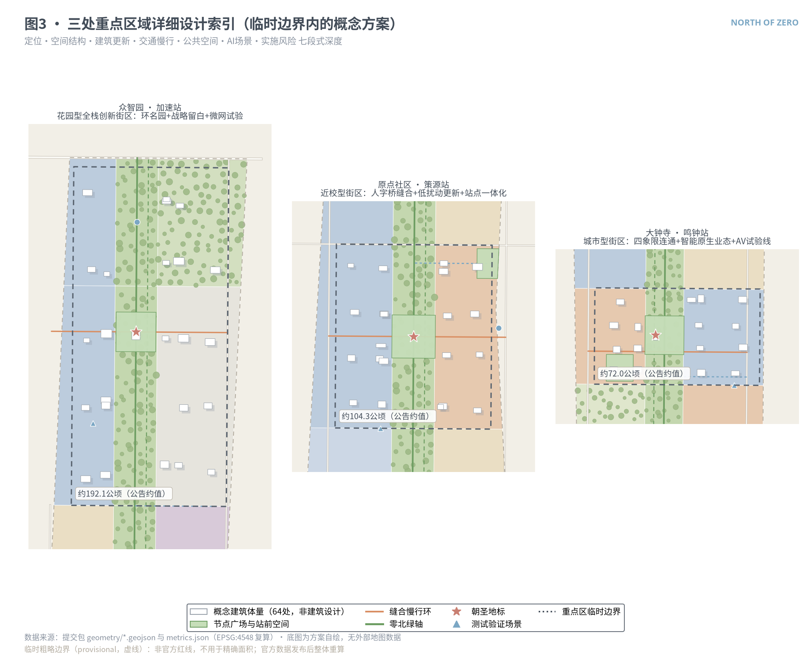
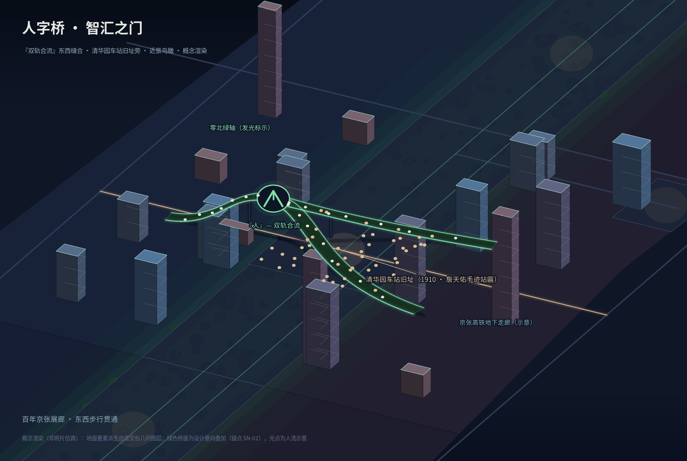
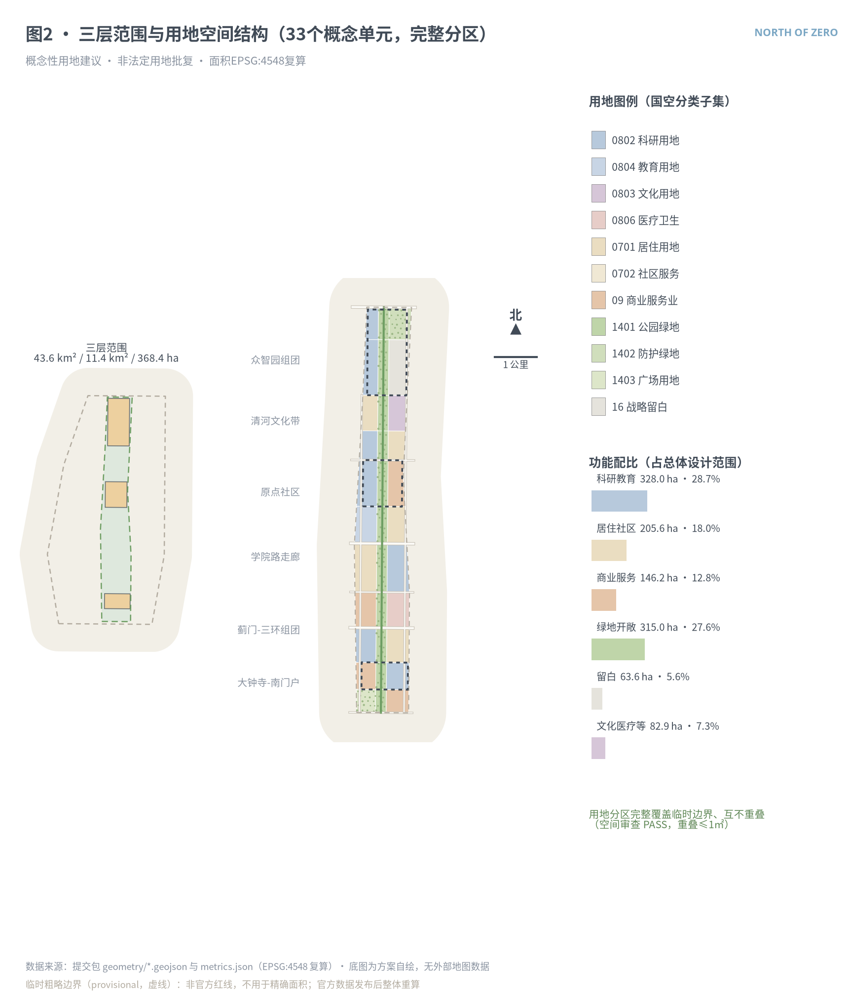
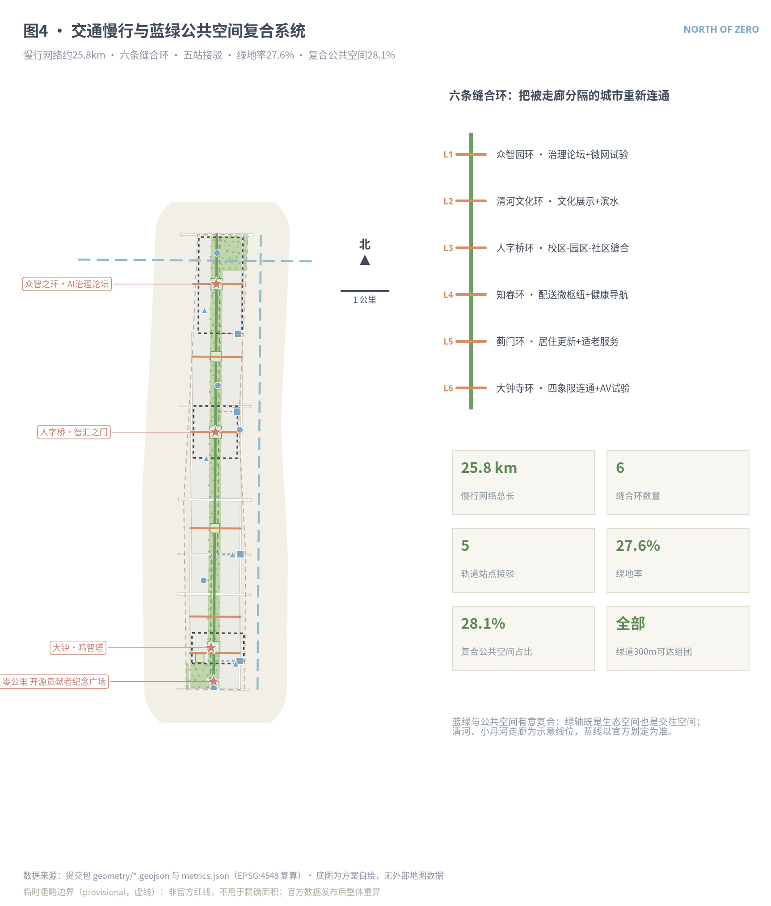
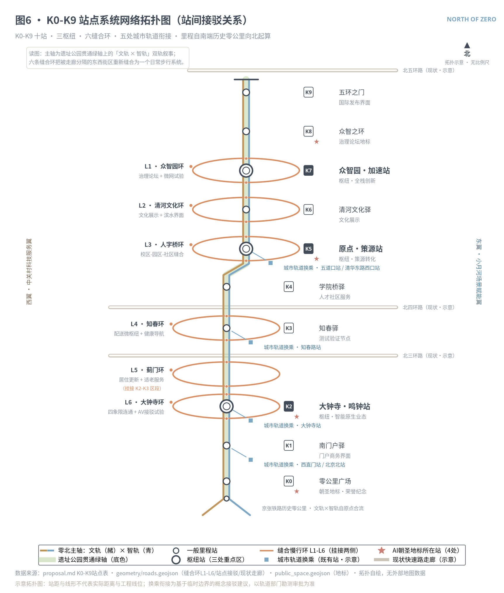
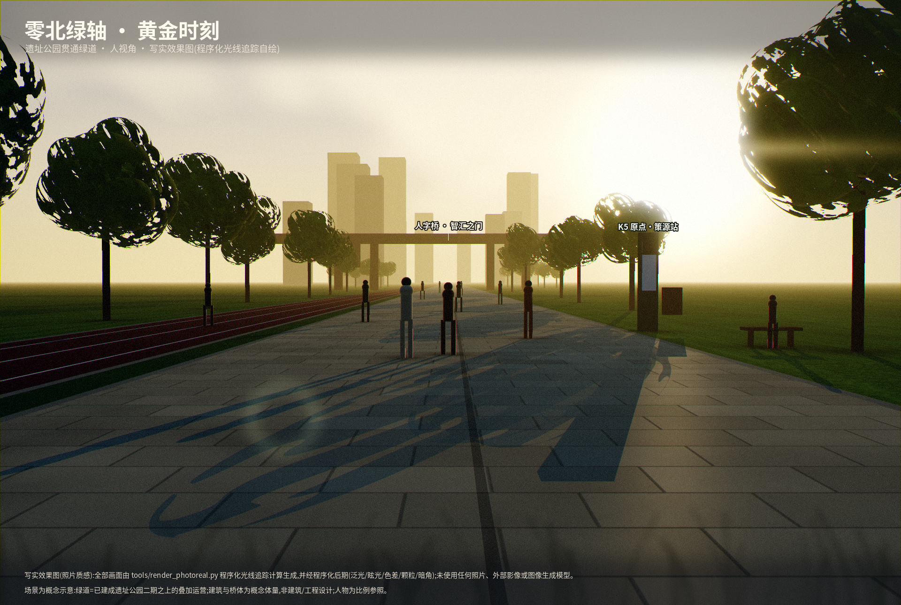
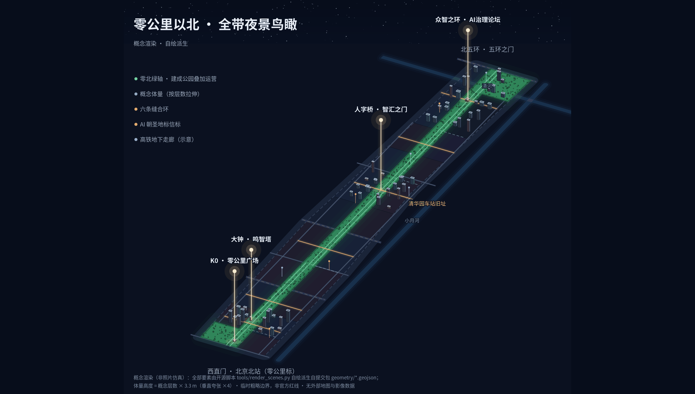
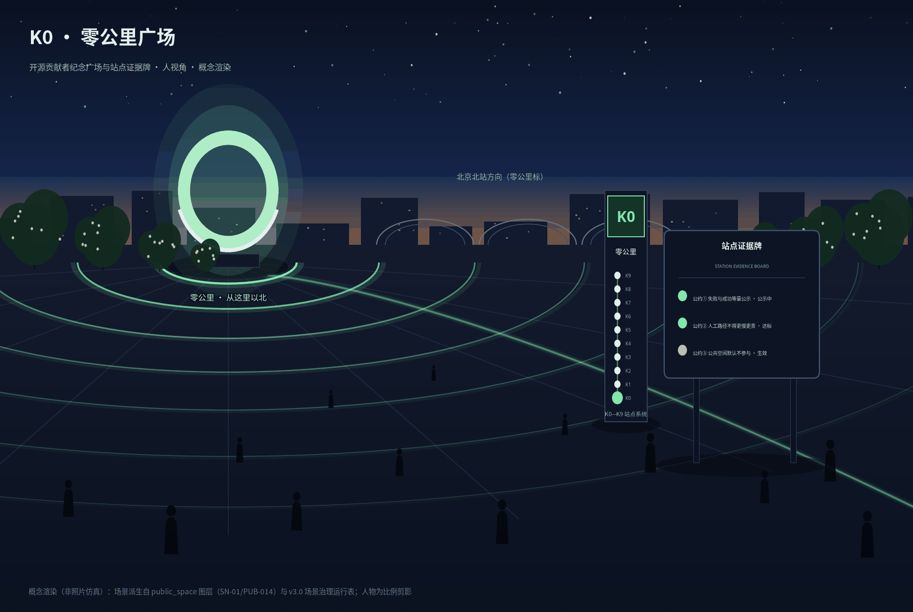

总览地图 · 总体概念
以京张遗址公园为零北主轴，三处重点区为创新枢纽，六条东西缝合慢行环重新连接被走廊分隔的城市街区；『人』字形双轨（文化轨×智能轨）承载品牌与文化叙事，K0-K9 里程系统提供命名秩序。

三层范围
| 层级 | 面积（公告约值） | 本包复算 | 深度 |
|---|---|---|---|
| 统筹研究范围 | 43.6 km² | 临时边界·战略层不复算 | 产业与未来城市研究 |
| 总体设计范围 | 11.4 km² | 11.41 km² (Δ0.11%) | 控规深度城市设计 |
| 重点区域范围 | 368.4 ha | 369.3 ha (Δ0.24%) | 规划综合实施方案深度 |
重点区域 · 三枢详细设计


用地分区 · 33个概念单元
完整覆盖临时边界、互不重叠（空间审查PASS）：科研教育28.7% · 居住社区18.0% · 商业服务12.8% · 绿地开敞27.6% · 文化医疗等7.3% · 战略留白5.6%。概念性功能配比建议，非法定用地批复。

交通慢行 · 六条缝合环
慢行网络约25.8公里：贯通绿道+双骑行道+六条东西缝合环+五处轨道站点接驳（大钟寺/知春路/五道口/清华东路西口/西直门·北京北）。现状道路为示意线位，非红线。



蓝绿公共空间
绿地率27.6%（绿轴+防护绿带+广场），复合公共空间28.1%——绿轴既是生态空间也是交往空间。清河、小月河走廊为示意线位，蓝线以官方划定为准。四处AI朝圣地标：K0零公里广场、人字桥·智汇之门、大钟·鸣智塔、众智之环；荣誉体系三级：贡献者墙（永久）/鸣钟记录（季度）/荣誉环展（年度）。

建筑 · 概念体量与拆改留
拆改留：保留优先、改造为主、拆除为例外；地块级结论待现状底账与权属数据，由专业团队编制。
AI 场景 · 12卡+画像+测试矩阵
6类用户画像（研究者/工程师/产业运营/居民含老年人/国际访客/城市运维）；12张场景卡中4张为产业测试验证场景（▲）。统一边界：公开或授权数据、不做个体识别、就地脱敏聚合、重要决策人工复核、测试≠批准运营。
| 编号 | 场景 | 空间落点 | 隐私与人工复核 |
|---|---|---|---|
| S01 | 零北绿道AI伴行 | 绿道服务站 | 匿名聚合·人工抽检 |
| S02 | 缝合智能过街 ▲ | 人字桥环 | 聚合流量·交管复核 |
| S03 | 无人低速配送 ▲ | 知春微枢纽 | 限线限时·安全员值守 |
| S04 | AI文化向导 | 文轨节点 | 史实版权审核 |
| S05 | 企业服务智能体 | 大钟寺商务组团 | 授权数据·人工确认 |
| S06 | 社区健康导航 | 健康导航站 | 不采健康隐私·人工窗口 |
| S07 | 运营复盘智能体 | 六条缝合环 | 匿名数据·人工确认 |
| S08 | 智能原生消费街区 | 五道口体验街 | 数据留商户·看聚合 |
| S09 | 成果转化撮合 | 原点转化组团 | 公开库·双方确认 |
| S10 | 端侧算力微网 ▲ | 众智园试验区 | 设施级聚合·人工审批 |
| S11 | 自动驾驶接驳 ▲ | 大钟寺试验线 | 封闭先行·安全员在车 |
| S12 | 荣誉与城市记忆 | K0纪念广场 | 本人同意·永久可核验 |

更新项目 · 18项与分期
| 项目组 | 内容 | 分期 |
|---|---|---|
| JZ-01…08 | 近期：三枢核心+南门户（K0广场、人字桥环、四象限连通、绿道贯通、微网试验等8项） | 约2026-2029 |
| JZ-09…14 | 中期：清河文化带、人才公寓、蓟门更新、五环之门、配送试验线等6项 | 约2029-2032 |
| JZ-15…18 | 远期：学院路组团更新、社区有机更新与适老化、医养组团、留白启用机制4项 | 约2032-2036 |
分期面积：近期416.3公顷 / 中期356.6公顷 / 远期368.4公顷；年度活动体系6项（零北大会、人字形黑客松、鸣钟日、伴跑节、场景开放日、国际驻留）。均为概念建议。
核心指标（EPSG:4548复算）
容积率：待正式数据补齐（控规条件缺失，不显示数值）。全部33项指标见 metrics.json，含公式、来源文件与置信度。
任务覆盖 23/23
1.3.1-1.3.3 征集目的 1.4.1-1.4.3 三层范围 1.5.1.1-1.5.1.2 统筹研究 1.5.2.1-1.5.2.5 总体设计 1.5.3.required+1-3 重点区域 agent.1 概念命名Logo agent.2 生态案例6 agent.3 场景12·画像6 agent.4 地标4·组件库10 agent.5 双轨文化叙事 agent.6 活动6·运营闭环
逐条映射见 compliance_matrix.json；5项强制标准见 standard_matrix.json；15项设计深度全部 complete 见 design_depth_matrix.json。
自检状态
确定性校验 ✓ 空间审查 ✓（覆盖无缝隙、重叠≤1㎡） 可视化审查 ✓（离线、指标一致） 专业证据审查 ✓
临时边界与重点区标注为 provisional 的提醒属预期告知，不阻断内容评审；详见 self_check.json。
来源
- 资格预审公告（海淀分局，2026-05-09）— 任务与面积约值依据
- 智能体任务书摘录（已清权，2026-05-18）— 六项任务与量化要求
- 临时粗略边界 polygon（仓库登记，provisional_only）
- 住建部城市设计管理办法 / 控规编制审批办法、自然资源部用地分类指南（本地快照）
- 生成式AI管理暂行办法、无障碍环境建设法（条款级参照）
- 全球生态案例6则（背景参考，未离线核验）· 字体与开源工具链已披露
完整22条来源含许可与用途边界见 sources.json；正式结论仅依据登记表 formal-ready 来源。
假设与重算触发
- A-BOUNDARY-001 · 临时边界，官方 polygon 发布后全包重算
- A-KEYAREA-001 · 重点区矩形为拟合，非片区红线
- A-CONTROLS-001 · 容积率/高度/密度等控规条件缺失，不作法定结论
- A-EXISTING-001 · 现状建筑底账缺失，拆改留仅为分类原则
- A-ALIGNMENT-001 · 道路/水系/站点为示意线位
- A-HERITAGE-001 · 文保控制线待数据，涉文保内容以审批为准
- A-CASES-001 / A-OPERATIONS-001 · 案例背景与运营设想不构成承诺